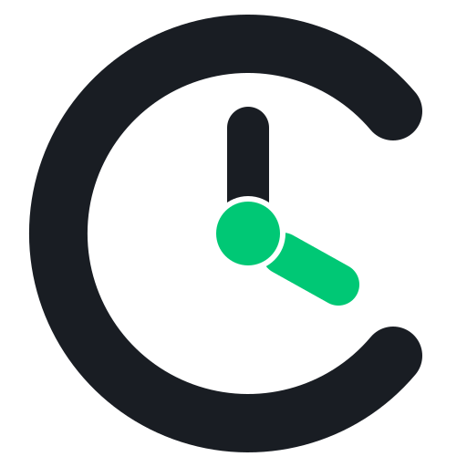
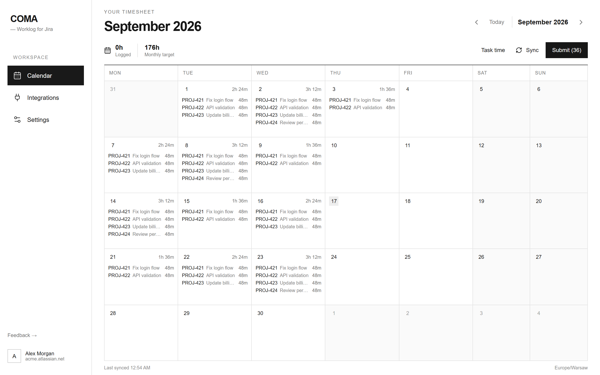
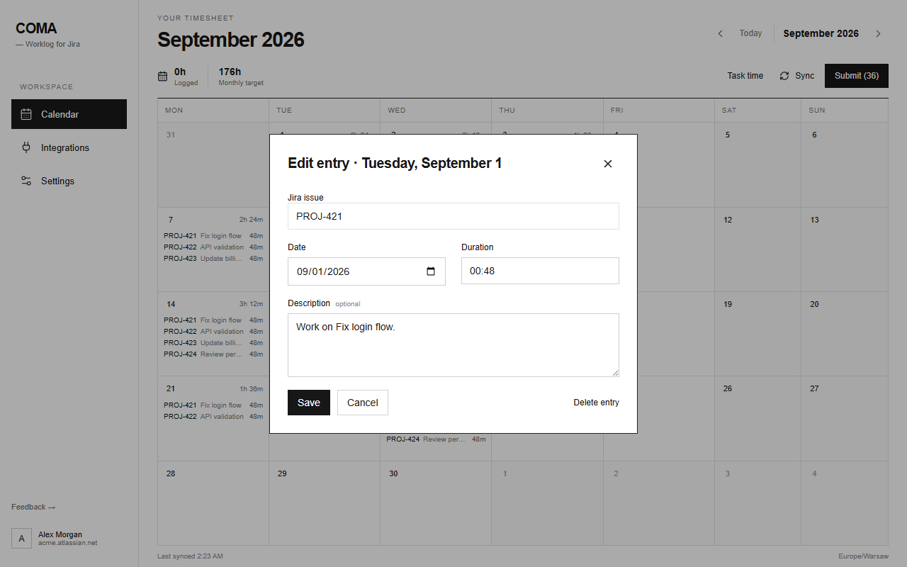

Bring in the signals
Jira history is the base. Google Calendar and GitHub are optional.

COMAChrome extension for Jira Cloud
COMA turns Jira task history, meetings and code reviews into editable drafts. Check the day, fix anything, then post.
No timers. No background tracking. Nothing posts by itself.

How it works
Jira history is the base. Google Calendar and GitHub are optional.
Change the task, time or note. Remove anything that does not belong.
COMA sends only the entries you choose to submit.
One calendar
Logged time and drafts sit together. Add a missing entry, edit a suggestion or select several days at once.

Optional context
Connect Google Calendar for meetings and GitHub for submitted reviews. Leave either one disconnected if you do not need it.
Meetings
Code reviews
Ready to review before Jira
Local by default
COMA has no application backend, analytics, ads or activity tracking. It talks directly to the services you connect and keeps drafts and settings in your Chrome profile.
The short version
No. Suggestions come from work you already recorded in Jira, Calendar or GitHub.
No. Every suggestion remains a draft until you submit it.
Jira Cloud in Chrome. Google Calendar and GitHub are optional.